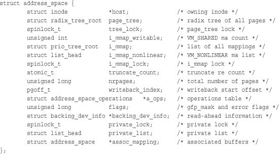
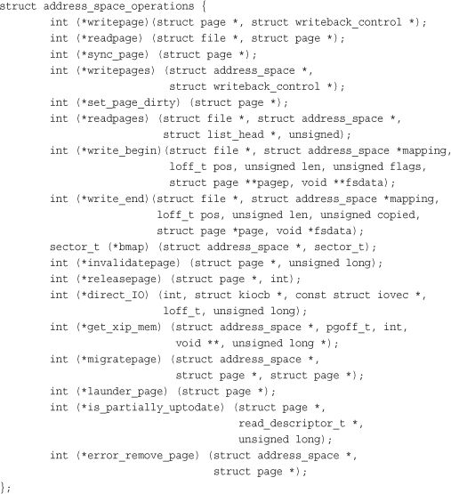
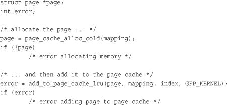
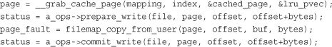
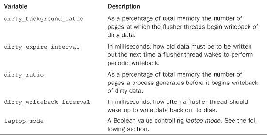

The Linux kernel implements a disk cache called the page cache. The goal of this cache is to minimize disk I/O by storing data in physical memory that would otherwise require disk access. This chapter deals with the page cache and the process by which changes to the page cache are propagated back to disk, which is called page writeback.
Two factors comingle to make disk caches a critical component of any modern operating system. First, disk access is several orders of magnitude slower than memory access—milliseconds versus nanoseconds. Accessing data from memory rather than the disk is much faster, and accessing data from the processor’s L1 or L2 cache is faster still. Second, data accessed once will, with a high likelihood, find itself accessed again in the near future. This principle—that access to a particular piece of data tends to be clustered in time—is called temporal locality, which ensures that if data is cached on its first access, there is a high probability of a cache hit (access to data in the cache) in the near future. Given that memory is so much faster than disk, coupled with the fact that once-used is likely twice-used data, an in-memory cache of the disk is a large performance win.
The page cache consists of physical pages in RAM, the contents of which correspond to physical blocks on a disk. The size of the page cache is dynamic; it can grow to consume any free memory and shrink to relieve memory pressure. We call the storage device being cached the backing store because the disk stands behind the cache as the source of the canonical version of any cached data. Whenever the kernel begins a read operation—for example, when a process issues the read() system call—it first checks if the requisite data is in the page cache. If it is, the kernel can forgo accessing the disk and read the data directly out of RAM. This is called a cache hit. If the data is not in the cache, called a cache miss, the kernel must schedule block I/O operations to read the data off the disk. After the data is read off the disk, the kernel populates the page cache with the data so that any subsequent reads can occur out of the cache. Entire files need not be cached; the page cache can hold some files in their entirety while storing only a page or two of other files. What is cached depends on what has been accessed.
This explains how data ends up in the page cache via read operations, but what happens when a process writes to disk, for example via the write() system call? Generally speaking, caches can implement one of three different strategies. In the first strategy, called no-write, the cache simply does not cache write operations. A write operation against a piece of data stored in the cache would be written directly to disk, invalidating the cached data and requiring it to be read from disk again on any subsequent read. Caches rarely employ this strategy because it not only fails to cache write operations, but it also makes them costly by invalidating the cache.
In the second strategy, a write operation would automatically update both the in-memory cache and the on-disk file. This approach is called a write-through cache because write operations immediately go through the cache to the disk. This approach has the benefit of keeping the cache coherent—synchronized and valid for the backing store—without needing to invalidate it. It is also simple.
The third strategy, employed by Linux, is called write-back.1 In a write-back cache, processes perform write operations directly into the page cache. The backing store is not immediately or directly updated. Instead, the written-to pages in the page cache are marked as dirty and are added to a dirty list. Periodically, pages in the dirty list are written back to disk in a process called writeback, bringing the on-disk copy in line with the in-memory cache. The pages are then marked as no longer dirty. The term “dirty” can be confusing because what is actually dirty is not the data in the page cache (which is up to date) but the data on disk (which is out of date). A better term would be unsynchronized. Nonetheless, we say the cache contents, not the invalid disk contents, are dirty. A write-back is generally considered superior to a write-through strategy because by deferring the writes to disk, they can be coalesced and performed in bulk at a later time. The downside is complexity.
1 Some books or operating systems call such a strategy a copy-back or write-behind cache. All three names are synonyms. Linux and other Unix systems use the noun “write-back” to refer to the caching strategy and the verb “writeback” to refer to the action of writing cached data back to the backing store. This book follows that usage.
The final piece to caching is the process by which data is removed from the cache, either to make room for more relevant cache entries or to shrink the cache to make available more RAM for other uses. This process, and the strategy that decides what to remove, is called cache eviction. Linux’s cache eviction works by selecting clean (not dirty) pages and simply replacing them with something else. If insufficient clean pages are in the cache, the kernel forces a writeback to make more clean pages available. The hard part is deciding what to evict. The ideal eviction strategy evicts the pages least likely to be used in the future. Of course, knowing what pages are least likely to be accessed requires knowing the future, which is why this hopeful strategy is often referred to as the clairvoyant algorithm. Such a strategy is ideal, but impossible to implement.
Cache eviction strategies attempt to approximate the clairvoyant algorithm with what information they have access to. One of the more successful algorithms, particularly for general-purpose page caches, is called least recently used, or LRU. An LRU eviction strategy requires keeping track of when each page is accessed (or at least sorting a list of pages by access time) and evicting the pages with the oldest timestamp (or at the start of the sorted list). This strategy works well because the longer a piece of cached data sits idle, the less likely it is to be accessed in the near future. Least recently used is a great approximation of most likely to be used. However, one particular failure of the LRU strategy is that many files are accessed once and then never again. Putting them at the top of the LRU list is thus not optimal. Of course, as before, the kernel has no way of knowing that a file is going to be accessed only once. But it does know how many times it has been accessed in the past.
Linux, therefore, implements a modified version of LRU, called the two-list strategy. Instead of maintaining one list, the LRU list, Linux keeps two lists: the active list and the inactive list. Pages on the active list are considered “hot” and are not available for eviction. Pages on the inactive list are available for cache eviction. Pages are placed on the active list only when they are accessed while already residing on the inactive list. Both lists are maintained in a pseudo-LRU manner: Items are added to the tail and removed from the head, as with a queue. The lists are kept in balance: If the active list becomes much larger than the inactive list, items from the active list’s head are moved back to the inactive list, making them available for eviction. The two-list strategy solves the only-used-once failure in a classic LRU and also enables simpler, pseudo-LRU semantics to perform well. This two-list approach is also known as LRU/2; it can be generalized to n-lists, called LRU/n.
We now know how the page cache is populated (via reads and writes), how it is synchronized in the face of writes (via writeback), and how old data is evicted to make way for new data (via a two-list strategy). Let’s now consider a real-world scenario to see how the page cache benefits the system. Assume you are working on a large software project—the Linux kernel, perhaps—and have many source files open. As you open and read source code, the files are stored in the page cache. Jumping around from file to file is instantaneous as the data is cached. As you edit the files, saving them appears instantaneous as well because the writes only need to go to memory, not the disk. When you compile the project, the cached files enable the compilation to proceed with far fewer disk accesses, and thus much more quickly. If the entire source tree is too big to fit in memory, some of it must be evicted—and thanks to the two-list strategy, any evicted files will be on the inactive list and likely not one of the source files you are directly editing. Later, hopefully when you are not compiling, the kernel will perform page writeback and update the on-disk copies of the source files with any changes you made. This caching results in a dramatic increase in system performance. To see the difference, compare how long it takes to compile your large software project when “cache cold”—say, fresh off a reboot—versus “cache warm.”
The page cache, as its name suggests, is a cache of pages in RAM. The pages originate from reads and writes of regular filesystem files, block device files, and memory-mapped files. In this manner, the page cache contains chunks of recently accessed files. During a page I/O operation, such as read(),2 the kernel checks whether the data resides in the page cache. If the data is in the page cache, the kernel can quickly return the requested page from memory rather than read the data off the comparatively slow disk. In the rest of this chapter, we explore the data structures and kernel facilities that maintain Linux’s page cache.
2
As you saw in Chapter 13, “The Virtual Filesystem,” it is not the read() and write() system calls that perform the actual page I/O operation, but the filesystem-specific methods specified by file->f_op->read() and file->f_op->write().
address_space ObjectA page in the page cache can consist of multiple noncontiguous physical disk blocks.3 Checking the page cache to see whether certain data has been cached is made difficult because of this noncontiguous layout of the blocks that constitute each page. Therefore, it is not possible to index the data in the page cache using only a device name and block number, which would otherwise be the simplest solution.
3 For example, a physical page is 4KB in size on the x86 architecture, whereas a disk block on many filesystems can be as small as 512 bytes. Therefore, 8 blocks might fit in a single page. The blocks need not be contiguous because the files might be laid out all over the disk.
Furthermore, the Linux page cache is quite general in what pages it can cache. Indeed, the original page cache introduced in System V Release 4 cached only filesystem data. Consequently, the SVR4 page cache used its equivalent of the inode object, called struct vnode, to manage the page cache. The Linux page cache aims to cache any page-based object, which includes many forms of files and memory mappings.
Although the Linux page cache could work by extending the inode structure (discussed in Chapter 13, “The Virtual Filesystem”) to support page I/O operations, such a choice would confine the page cache to files. To maintain a generic page cache—one not tied to physical files or the inode structure—the Linux page cache uses a new object to manage entries in the cache and page I/O operations. That object is the address_space structure. Think of address_space as the physical analogue to the virtual vm_area_struct introduced in Chapter 15, “The Process Address Space.” While a single file may be represented by 10 vm_area_struct structures (if, say, five processes each mmap() it twice), the file has only one address_space structure—just as the file may have many virtual addresses but exist only once in physical memory. Like much else in the Linux kernel, address_space is misnamed. A better name is perhaps page_cache_entity or physical_pages_of_a_file.
The address_space structure is defined in <linux/fs.h>:

The i_mmap field is a priority search tree of all shared and private mappings in this address space. A priority search tree is a clever mix of heaps and radix trees.4 Recall from earlier that while a cached file is associated with one address_space structure, it can have many vm_area_struct structures—a one-to-many mapping from the physical pages to many virtual pages. The i_mmap field allows the kernel to efficiently find the mappings associated with this cached file.
4 The kernel implementation is based on the radix priority search tree proposed by Edward M. McCreight in SIAM Journal of Computing, volume 14, number 2, pages 257–276, May 1985.
There are a total of nrpages in the address space.
The address_space is associated with some kernel object. Normally, this is an inode. If so, the host field points to the associated inode. The host field is NULL if the associated object is not an inode—for example, if the address_space is associated with the swapper.
address_space OperationsThe a_ops field points to the address space operations table, in the same manner as the VFS objects and their operations tables. The operations table is represented by struct address_space_operations and is also defined in <linux/fs.h>:

These function pointers point at the functions that implement page I/O for this cached object. Each backing store describes how it interacts with the page cache via its own address_space_operations. For example, the ext3 filesystem defines its operations in fs/ext3/inode.c. Thus, these are the functions that manage the page cache, including the most common: reading pages into the cache and updated data in the cache. Thus, the readpage() and writepage()methods are most important. Let’s look at the steps involved in each, starting with a page read operation. First, the Linux kernel attempts to find the request data in the page cache. The find_get_page() method is used to perform this check; it is passed an address_space and page offset. These values search the page cache for the desired data:
page = find_get_page(mapping, index);
Here, mapping is the given address_space and index is the desired offset into the file, in pages. (Yes, calling the address_space structure mapping just furthers the naming confusion. I’m replicating the kernel’s naming for consistency, but I do not condone it.) If the page does not exist in the cache, find_get_page() returns NULL and a new page is allocated and added to the page cache:

Finally, the requested data can be read from disk, added to the page cache, and returned to the user:
error = mapping->a_ops->readpage(file, page);
Write operations are a bit different. For file mappings, whenever a page is modified, the VM simply calls
SetPageDirty(page);
The kernel later writes the page out via the writepage() method. Write operations on specific files are more complicated. The generic write path in mm/filemap.c performs the following steps:

First, the page cache is searched for the desired page. If it is not in the cache, an entry is allocated and added. Next, the kernel sets up the write request and the data is copied from user-space into a kernel buffer. Finally, the data is written to disk.
Because the previous steps are performed during all page I/O operations, all page I/O is guaranteed to go through the page cache. Consequently, the kernel attempts to satisfy all read requests from the page cache. If this fails, the page is read in from disk and added to the page cache. For write operations, the page cache acts as a staging ground for the writes. Therefore, all written pages are also added to the page cache.
Because the kernel must check for the existence of a page in the page cache before initiating any page I/O, such a check must be quick. Otherwise, the overhead of searching and checking the page cache could nullify any benefits the cache might provide. (At least if the cache hit rate is low—the overhead would have to be awful to cancel out the benefit of retrieving the data from memory in lieu of disk.)
As you saw in the previous section, the page cache is searched via the address_space object plus an offset value. Each address_space has a unique radix tree stored as page_tree. A radix tree is a type of binary tree. The radix tree enables quick searching for the desired page, given only the file offset. Page cache searching functions such as find_get_page() call radix_tree_lookup(), which performs a search on the given tree for the given object.
The core radix tree code is available in generic form in lib/radix-tree.c. Users of the radix tree need to include <linux/radix-tree.h>.
Prior to the 2.6 kernel, the page cache was not searched via the radix tree. Instead, a global hash was maintained over all the pages in the system. The hash returned a doubly linked list of entries that hash to the same given value. If the desired page were in the cache, one of the items in the list was the corresponding page. Otherwise, the page was not in the page cache and the hash function returned NULL.
The global hash had four primary problems:
• A single global lock protected the hash. Lock contention was quite high on even moderately sized machines, and performance suffered as a result.
• The hash was larger than necessary because it contained all the pages in the page cache, whereas only pages pertaining to the current file were relevant.
• Performance when the hash lookup failed (that is, the given page was not in the page cache) was slower than desired, particularly because it was necessary to walk the chains off of a given hash value.
• The hash consumed more memory than other possible solutions.
The introduction of the radix tree-based page cache in 2.6 solved these issues.
Individual disk blocks also tie into the page cache, by way of block I/O buffers. Recall from Chapter 14, “The Block I/O Layer,” that a buffer is the in-memory representation of a single physical disk block. Buffers act as descriptors that map pages in memory to disk blocks; thus, the page cache also reduces disk access during block I/O operations by both caching disk blocks and buffering block I/O operations until later. This caching is often referred to as the buffer cache, although as implemented it is not a separate cache but is part of the page cache.
Block I/O operations manipulate a single disk block at a time. A common block I/O operation is reading and writing inodes. The kernel provides the bread() function to perform a low-level read of a single block from disk. Via buffers, disk blocks are mapped to their associated in-memory pages and cached in the page cache.
The buffer and page caches were not always unified; doing so was a major feature of the 2.4 Linux kernel. In earlier kernels, there were two separate disk caches: the page cache and the buffer cache. The former cached pages; the latter cached buffers. The two caches were not unified: A disk block could exist in both caches simultaneously. This led to wasted effort synchronizing the two cached copies and memory wasted in duplicating cached items. Today, we have one disk cache: the page cache. The kernel still needs to use buffers, however, to represent disk blocks in memory. Conveniently, the buffers describe the mapping of a block onto a page, which is in the page cache.
Write operations are deferred in the page cache. When data in the page cache is newer than the data on the backing store, we call that data dirty. Dirty pages that accumulate in memory eventually need to be written back to disk. Dirty page writeback occurs in three situations:
• When free memory shrinks below a specified threshold, the kernel writes dirty data back to disk to free memory because only clean (nondirty) memory is available for eviction. When clean, the kernel can evict the data from the cache and then shrink the cache, freeing up more memory.
• When dirty data grows older than a specific threshold, sufficiently old data is written back to disk to ensure that dirty data does not remain dirty indefinitely.
• When a user process invokes the
sync()andfsync()system calls, the kernel performs writeback on demand.
These three jobs have rather different goals. In fact, two separate kernel threads performed the work in older kernels (see the following section). In 2.6, however, a gang5 of kernel threads, the flusher threads, performs all three jobs.
5 The term “gang” is commonly used in computer science to denote a group of things that can operate in parallel.
First, the flusher threads need to flush dirty data back to disk when the amount of free memory in the system shrinks below a specified level. The goal of this background write-back is to regain memory consumed by dirty pages when available physical memory is low. The memory level at which this process begins is configured by the dirty_background_ratio sysctl. When free memory drops below this threshold, the kernel invokes the wakeup_flusher_threads() call to wake up one or more flusher threads and have them run the bdi_writeback_all () function to begin writeback of dirty pages. This function takes as a parameter the number of pages to attempt to write back. The function continues writing out data until two conditions are true:
• The specified minimum number of pages has been written out.
• The amount of free memory is above the
dirty_background_ratiothreshold.
These conditions ensure that the flusher threads do their part to relieve low-memory conditions. Writeback stops prior to these conditions only if the flusher threads write back all the dirty pages and there is nothing left to do.
For its second goal, a flusher thread periodically wakes up (unrelated to low-memory conditions) and writes out old dirty pages. This is performed to ensure that no dirty pages remain in memory indefinitely. During a system failure, because memory is volatile, dirty pages in memory that have not been written to disk are lost. Consequently, periodically synchronizing the page cache with the disk is important. On system boot, a timer is initialized to wake up a flusher thread and have it run the wb_writeback() function. This function then writes back all data that was modified longer than dirty_expire_interval milliseconds ago. The timer is then reinitialized to expire again in dirty_writeback_interval milliseconds. In this manner, the flusher threads periodically wake up and write to disk all dirty pages older than a specified limit.
The system administrator can set these values either in /proc/sys/vm or via sysctl. Table 16.1 lists the variables.
Table 16.1. Page Writeback Settings

The flusher code lives in mm/page-writeback.c and mm/backing-dev.c and the writeback mechanism lives in fs/fs-writeback.c.
Laptop mode is a special page writeback strategy intended to optimize battery life by minimizing hard disk activity and enabling hard drives to remain spun down as long as possible. It is configurable via /proc/sys/vm/laptop_mode. By default, this file contains a zero and laptop mode is disabled. Writing a one to this file enables laptop mode.
Laptop mode makes a single change to page writeback behavior. In addition to performing writeback of dirty pages when they grow too old, the flusher threads also piggyback off any other physical disk I/O, flushing all dirty buffers to disk. In this manner, page writeback takes advantage that the disk was just spun up, ensuring that it will not cause the disk to spin up later.
This behavioral change makes the most sense when dirty_expire_interval and dirty_writeback_interval are set to large values—say, 10 minutes. With writeback so delayed, the disk is spun up infrequently, and when it does spin up, laptop mode ensures that the opportunity is well utilized. Because shutting off the disk drive is a significant source of power savings, laptop mode can greatly improve how long a laptop lasts on battery. The downside is that a system crash or other failure can lose a lot of data.
Many Linux distributions automatically enable and disable laptop mode, and modify other writeback tunables, when going on and off battery. This enables a machine to benefit from laptop mode when on battery power and then automatically return to normal page writeback behavior when plugged into AC.
Prior to the 2.6 kernel, the job of the flusher threads was met by two other kernel threads, bdflush and kupdated.
The bdflush kernel thread performed background writeback of dirty pages when available memory was low. A set of thresholds was maintained, similar to the flusher threads’, and bdflush was awakened via wakeup_bdflush() whenever free memory dropped below those thresholds.
Two main differences distinguish bdflush and the current flusher threads. The first, which is discussed in the next section, is that there was always only one bdflush daemon, whereas the number of flusher threads is a function of the number of disk spindles. The second difference is that bdflush was buffer-based; it wrote back dirty buffers. Conversely, the flusher threads are page-based; they write back whole pages. Of course, the pages can correspond to buffers, but the actual I/O unit is a full page and not a single buffer. This is beneficial as managing pages is easier than managing buffers because pages are a more general and common unit.
Because bdflush flushes buffers only when memory is low or the number of buffers is too large, the kupdated thread was introduced to periodically write back dirty pages. It served an identical purpose to the wb_writeback() function.
In the 2.6 kernel, bdflush and kupdated gave way to the pdflush threads. Short for page dirty flush (more of those confusing names), the pdflush threads performed similar to the flusher threads of today. The main difference is that the number of pdflush threads is dynamic, by default between two and eight, depending on the I/O load of the system. The pdflush threads are not associated with any specific disk; instead, they are global to all disks in the system. This allows for a simple implementation. The downside is that pdflush can easily trip up on congested disks, and congestion is easy to cause with modern hardware. Moving to per-spindle flushing enables the I/O to perform synchronously, simplifying the congestion logic and improving performance. The flusher threads replaced the pdflush threads in the 2.6.32 kernel. The per-spindle flushing is the main difference; the rest of this section is also applicable to pdflush and thus any 2.6 kernel.
One of the major flaws in the bdflush solution was that bdflush consisted of one thread. This led to possible congestion during heavy page writeback where the single bdflush thread would block on a single congested device queue (the list of I/O requests waiting to submit to disk), whereas other device queues would sit relatively idle. If the system has multiple disks and the associated processing power, the kernel should keep each disk busy. Unfortunately, even with plenty of data needing writeback, bdflush can become stuck handling a single queue and fail to keep all disks saturated. This occurs because the throughput of disks is a finite—and unfortunately comparatively small—number. If only a single thread is performing page writeback, that single thread can easily spend a long time waiting for a single disk because disk throughput is such a limiting quantity. To mitigate this, the kernel needs to multithread page writeback. In this manner, no single device queue can become a bottleneck.
The 2.6 kernel solves this problem by enabling multiple flusher threads to exist. Each thread individually flushes dirty pages to disk, allowing different flusher threads to concentrate on different device queues. With the pdflush threads, the number of threads was dynamic, and each thread tried to stay busy grabbing data from the per-superblock dirty list and writing it back to disk. The pdflush approach prevents a single busy disk from starving other disks. This is all good, but what if each pdflush thread were to get hung up writing to the same, congested, queue? In that case, the performance of multiple pdflush threads would not be an improvement over a single thread. The memory consumed, however, would be significantly greater. To mitigate this effect, the pdflush threads employ congestion avoidance: They actively try to write back pages whose queues are not congested. As a result, the pdflush threads spread out their work and refrain from merely hammering on the same busy device.
This approach worked fairly well, but the congestion avoidance was not perfect. On modern systems, congestion is easy to cause because I/O bus technology improves at a slower rate than the rest of the computer—processors keep getting faster according to Moore’s Law, but hard drives are only marginally quicker than they were two decades ago. Moreover, aside from pdflush, no other part of the I/O system employs congestion avoidance. Thus, in certain cases pdflush can avoid writing back on a specific disk far longer than desired. With the current flusher threads model, available since 2.6.32, the threads are associated with a block device, so each thread grabs data from its per-block device dirty list and writes it back to its disk. Writeback is thus synchronous and the threads, because there is one per disk, do not need to employ complicated congestion avoidance. This approach improves fairness and decreases the risk of starvation.
Because of the improvements in page writeback, starting with the introduction of pdflush and continuing with the flusher threads, the 2.6 kernel can keep many more disks saturated than any earlier kernel. In the face of heavy activity, the flusher threads can maintain high throughput across multiple disks.
This chapter looked at Linux’s page cache and page writeback. We saw how the kernel performs all page I/O through the page cache and how this page cache, by storing data in memory, significantly improves the performance of the system by reducing the amount of disk I/O. We discussed how writes are maintained in the page cache through a process called write-back caching, which keeps pages “dirty” in memory and defers writing the data back to disk. The flusher “gang” of kernel threads handles this eventual page writeback.
Over the last few chapters, we have built a solid understanding of memory and filesystem management. Now let’s segue over to the topic of device drivers and modules to see how the Linux kernel provides a modular and dynamic infrastructure for the run-time insertion and removal of kernel code.